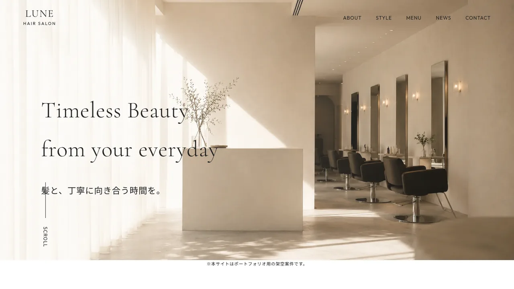
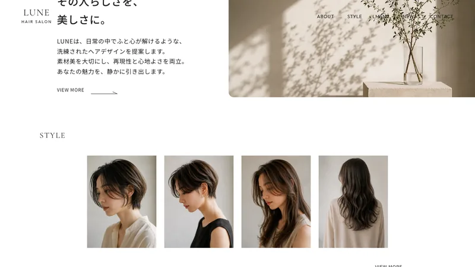
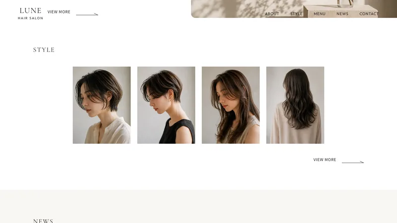
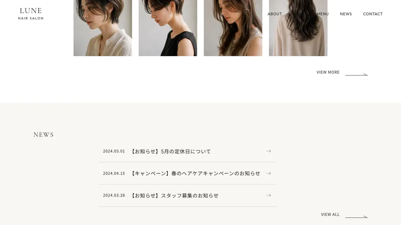

Case Study — Hair Salon
LUNE
「Timeless Beauty from your everyday」を掲げるヘアサロン「LUNE」のブランドサイト。余白と光を生かした静かな上質さで、サロンの世界観がそのまま伝わることを目指しました。
デモサイトを見る
Overview
概要
| クライアント | ヘアサロン「LUNE」 |
|---|---|
| 種別 | ブランドサイト（コーポレート） |
| 担当範囲 | 情報設計 / デザイン / フロントエンド実装 |
| 期間 | 約1.5ヶ月 |
| 使用技術 | HTML / CSS(SCSS) / JavaScript |
Client & Target
クライアントとターゲット
クライアントは、丁寧なカウンセリングと落ち着いた空間を大切にするヘアサロン「LUNE」。「その人らしさを、美しさに。」という想いを、Webの上でも静かに伝えたい——そんなご相談からはじまりました。
届けたいのは、流行や価格よりも「自分に似合うもの」をじっくり選びたい大人の女性。せわしない情報ではなく、落ち着いた時間の中でサロンの空気感を感じ取ってもらうことを意識しました。
Problem & Objective
課題と目標
以前は世界観の伝わる場がなく、サロンの上質さや雰囲気がうまく伝わっていませんでした。予約までの導線もはっきりせず、せっかくの来店意欲を取りこぼしてしまう状態でした。
そこで目標を二つに置きました。「サロンの世界観をひと目で感じてもらうこと」、そして「迷わず予約まで進めること」。
Solution
解決アプローチ
情報を詰め込まず、余白と写真で語る構成にしました。トップは大きく一枚の世界観を見せ、スクロールに沿ってコンセプト・スタイル・お知らせへと、静かに読み進められる流れに。
予約への導線はさりげなく、それでいて常に手の届く位置に。世界観を壊さないまま、自然と行動につながることを優先しました。

Design
デザインの工夫
「Timeless Beauty」というコンセプトに合わせ、彩度を抑えた配色とセリフ系の見出しで、流行に左右されない上品さを表現しました。光と影をとらえた写真を主役に、余白をたっぷり取って、ひとつひとつの要素が呼吸できるように。
華やかさよりも、静けさ。長く眺めていられる落ち着きを、いちばん大切にしています。


Development
実装のこだわり
スマートフォンでの閲覧を基準に実装し、どの画面でも余白の心地よさが保たれるよう調整しました。スクロールに合わせた控えめなフェードで、ページ全体に上質な「間」を持たせています。予約ボタンは、どこを見ていてもすぐ手が届く位置に固定しました。
Result & Point
成果とポイント
目指したのは、来店前にサロンの雰囲気をゆっくり感じてもらえる場。世界観をひと目で受け取ってもらいながら、予約までの動きが自然につながることを意図しました。
見どころは、余白の取り方と、光をとらえた写真の見せ方。何も足さない潔さで上質さを表現した、お気に入りの一案件です。